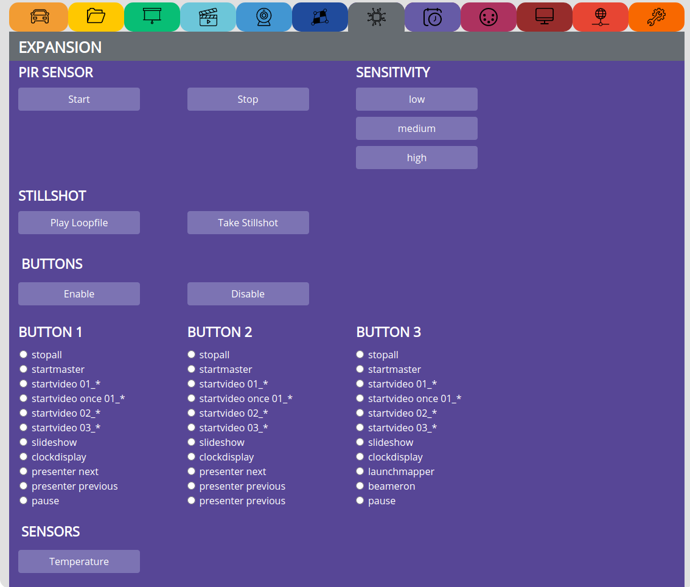
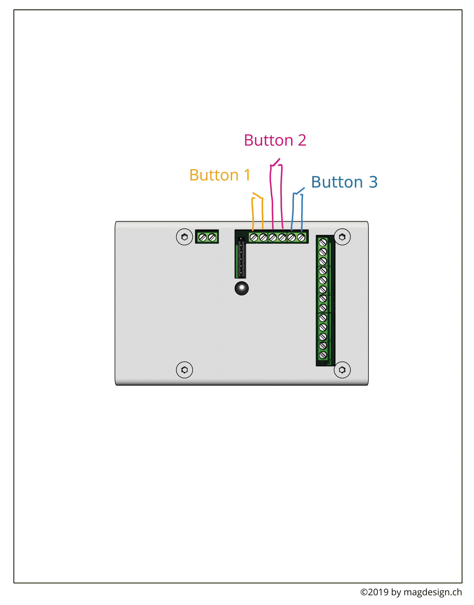

EXPANSION¶
This section holds all functions for the expansion board:
PIR SENSOR¶
see video tutorial: https://video.pocketvj.com/AVideo/video/13/pocketvj-exhibition-pir-sensor
With the PIR Sensor attached, you can create an interactive installation which triggers a random video as soon as the sensor detects motion.
SENSITIVITY¶
Adjust after how many movements the video will be triggered.
low => 30 movements
medium => 20 movements
high => 12 movements
STILLSHOT¶
Set the picture which will appear for approx. 1s when the loop file stops and the trigger file starts to play.
CONNECT PIR¶

If you have trouble with the pir sensor, there is a testscript which you can run from terminal to check what its states:
python /var/www/sync/startpirtest.py
Factory standard the sensor is set to a distance range of ~5m, if you need another range, you can adjust this directly on the sensor. Gently unscrew it with a hex key and then change the range with a screwdriver:
Its also possible to connect Ultrasonic sensors which can be mounted behind materials, ask me for more info.
BUTTONS¶
see video tutorial: https://video.pocketvj.com/AVideo/video/8/pocketvj-exhibition-button-connecting
CONNECT BUTTONS¶
SENSORS¶
Temperature => see temperature/humidity from temperature sensor.
Attached a DHT11 Temperature/Humidity Sensor as shown in the diagram.
+5V goes to PIN13
GND goes to PIN1
S Signal goes to PIN5
IR Sender diode => See IR REMOTE LIRC
+5V goes to PIN13
GND goes to PIN1
S Signal goes to PIN6
BEACONS¶
See video tutorial: https://video.pocketvj.com/AVideo/videoEmbed/46/bluetooth-beacon-support
Note
PocketVJ’s bought before 31. March 2021 need to install Bluetooth first to use this function, see Systemsettings=>Firmware=>Install Bluetooth
An Eddystone beacon UID looks like this: 4927cc84cab307e6952f
If you simulate a beacon with e.g. PyBeacon like: sudo PyBeacon -i 4927cc84cab307e6952f5dadf7f8468c
the resulting namespace to enter in PocketVJ would be: 4927cc84cab307e6952f
Do not add the same beacon UID more than once, otherwise its confusing what to trigger
Start => Starts the beacon listener.
Stop => Stops the beacon listener since regular stop button will not stop the beacon listener.
Set Beacon => Insert your Eddystone UID beacon namespace to which you want to trigger stuff.
Beacon Info => Display which beacon names you are listening to.
Beacon1, Beacon2, Beacon3, Beacon4 =>> Set the desired function to trigger.
Note
Quick how to setup:
Stop all
Enter your beacon UID’s
Select the function it shall trigger
Start the Beacon listener
make sure you did not => WIFI ANTENNA => OFF Permanent since this will also disable the Bluetooth chip !!!
DELAY
Disable Delay is the default value, after triggering an action with a beacon, we wait until the action is finished.
Enable Delay will wait for Delay in Seconds until it starts scanning again and if it found any beacon, it will stop the current action and trigger the new one.
Set Delay enter a number (Seconds) and click Set Delay to set the above mentioned delay.
Note
You are able to set a delay time for the audio to trigger, so you can reach a sync, for this see the DMX PLAYER section of this manual and also watch the dmx video tutorial.
Note
For debugging purposes you can run sudo python3 /var/www/sync/bluetooth_scanner.py script within the terminal to see all bluetooth devices around you,
if you want to display only beacons containing a namespace: /var/www/sync/bluetooth_scanner.py | grep "namespace" and wait for 10seconds until you get the output to see if your beacon is visible.
EXPANSION PINS¶
Note
MOSFET max. 10A
PWM0 + PWM1 only usable on special series cases